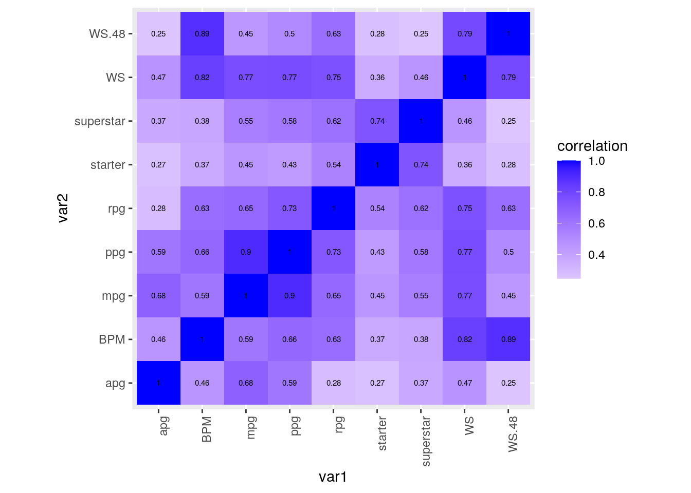
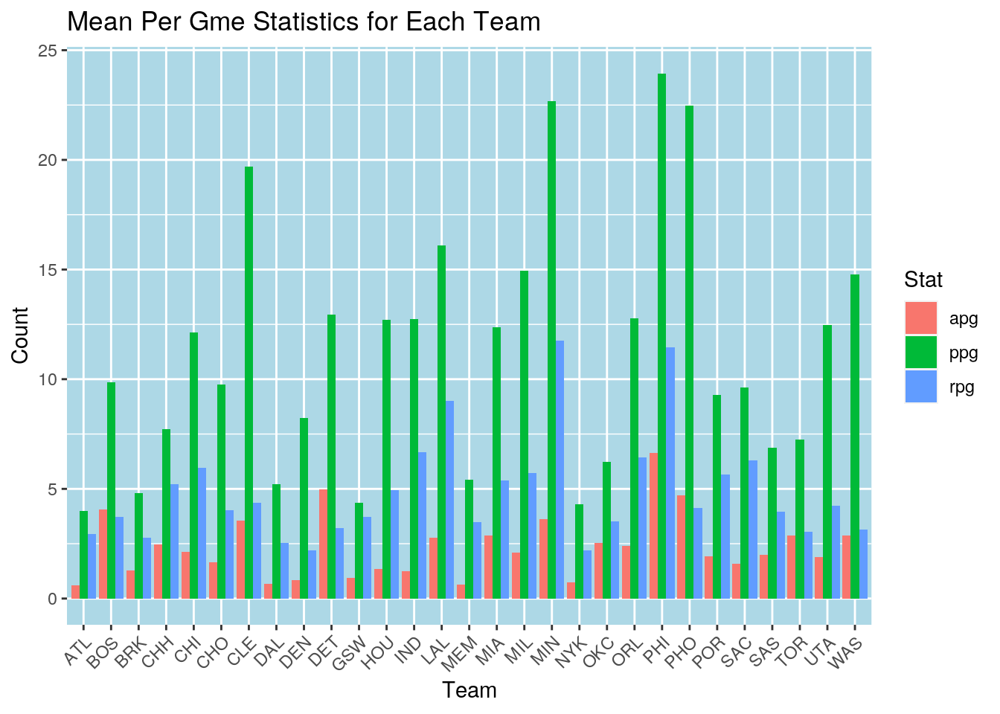
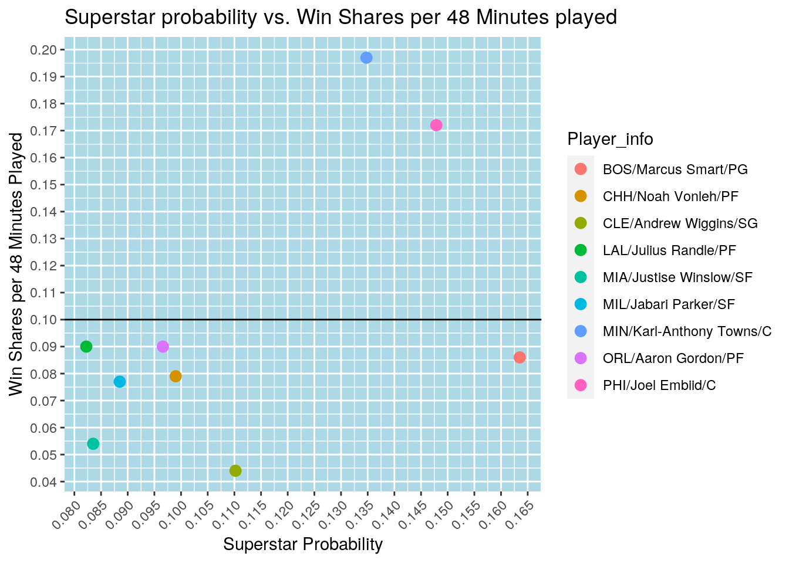
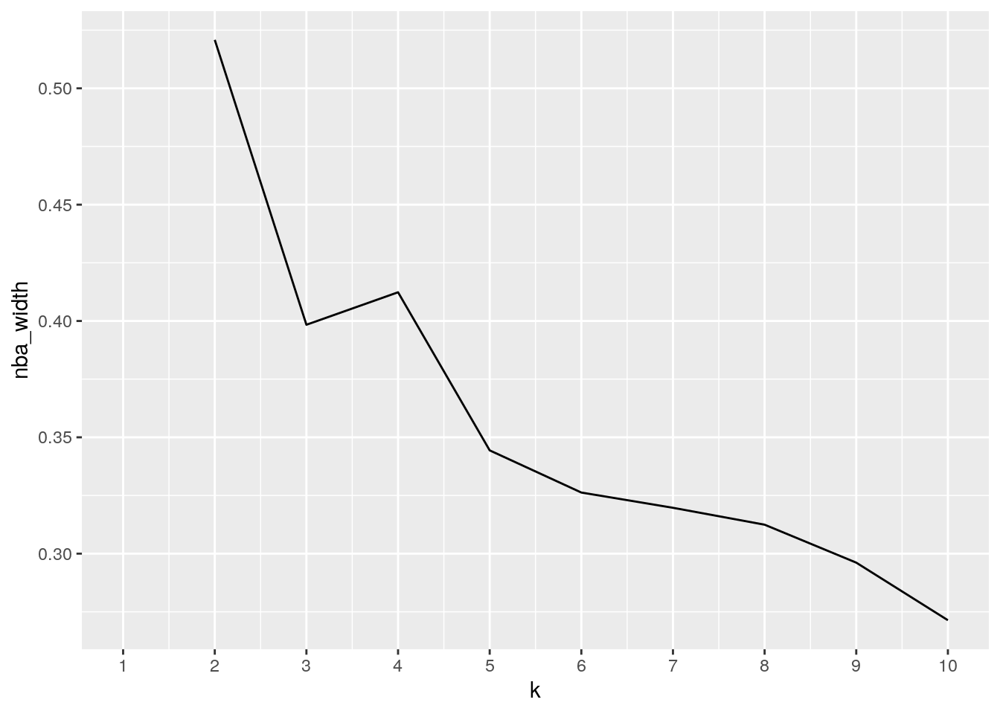
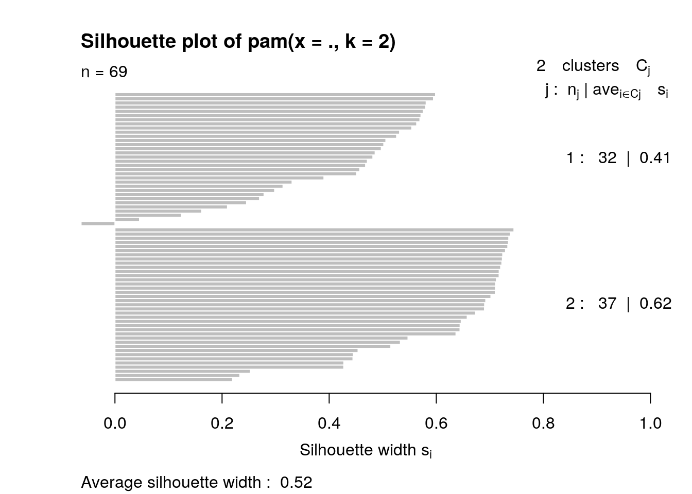
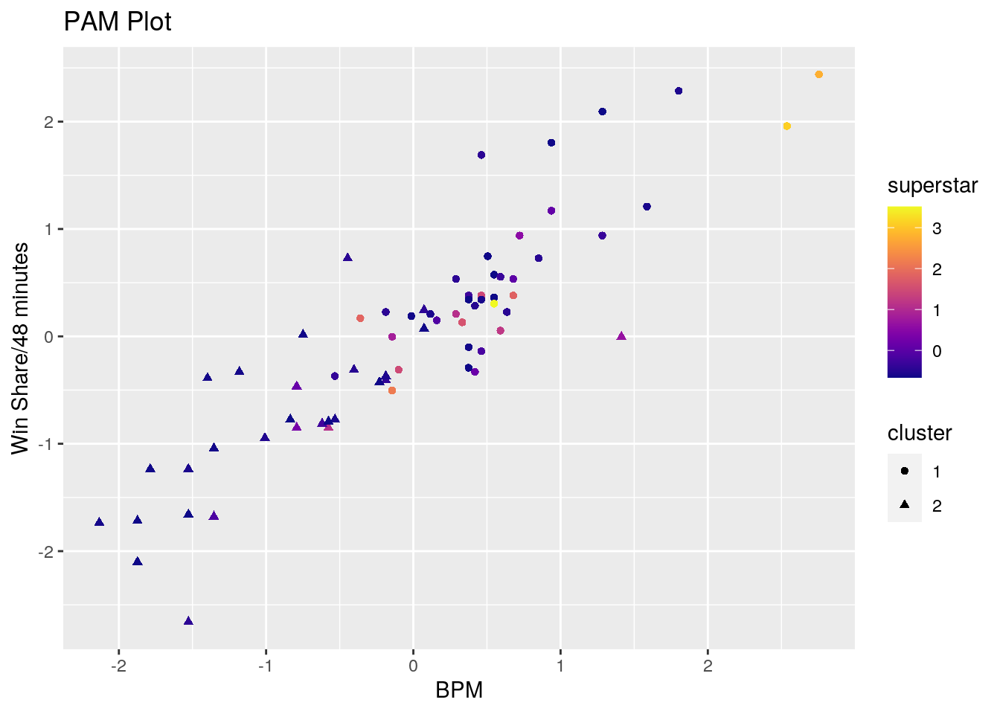

The datasets utilized for this project include a variety of information and statistics about the NBA Draft classes of 2014 and 2015. The dataset titled “nba_draft_2015” was found within the “Fivethirtyeight” package on r and displays theoretical statistical data on members of the 2001-2015 NBA draft classes. Data includes probability on becoming a superstar, starter, role player, and bust among other pieces of information. The other dataset titled “nba_draftclass_2014_2015_stats” contains the current career statistics of the players from the 2014 and 2015 NBA draft classes. This data includes player statistics such as points, games played, minutes played, assists, rebounds, etc. The dataset was compiled from the basketball reference website. Link
These datasets intrigued me because basketball is one of my favorite sports to play and to watch. Also, the datasets chosen display information on how the NBA analytical team rated players in the past compared to how those players ended up performing in the future. By dissecting the overlapping players we can see how accurate the predictions were and if any of these predictions were relatively correct or flat out wrong.
This section contains a record of the packages and datasets used for this project.
library(tidyverse)
library(tidyr)
library(dplyr)
library(ggplot2)
library(cluster)
library(viridis)
library(GGally)
library(plotly)
library("fivethirtyeight")
data("nba_draft_2015")
nba_draftclass_2014_2015_stats <- read.csv("~/Website/content/project/nba_draftclass_2014_2015_stats.csv")The datasets used were already tidy so the following section displays the practice of untidying and tidying.
untidy_nba_draft_2015 <- nba_draft_2015 %>% pivot_wider(names_from = projected_spm,
values_from = position)Pivoting wider took an already tidy data set and proceed to create new column based off of the values in the "projected_spm" column, filling the values with the positions of the players
tidy1 = untidy_nba_draft_2015 %>% pivot_longer(cols = -(player:bust),
names_to = "projected_spm")
glimpse(tidy1)## Rows: 1,188,100
## Columns: 9
## $ player <chr> "Karl-Anthony Towns", "Karl-Anthony Towns", "Karl-Antho…
## $ id <chr> "karl-anthony-towns", "karl-anthony-towns", "karl-antho…
## $ draft_year <int> 2015, 2015, 2015, 2015, 2015, 2015, 2015, 2015, 2015, 2…
## $ superstar <dbl> 0.1347667, 0.1347667, 0.1347667, 0.1347667, 0.1347667, …
## $ starter <dbl> 0.4271833, 0.4271833, 0.4271833, 0.4271833, 0.4271833, …
## $ role_player <dbl> 0.1630833, 0.1630833, 0.1630833, 0.1630833, 0.1630833, …
## $ bust <dbl> 0.2749667, 0.2749667, 0.2749667, 0.2749667, 0.2749667, …
## $ projected_spm <chr> "1.030605703", "0.875328997", "0.679493305", "0.5216612…
## $ value <chr> "C", NA, NA, NA, NA, NA, NA, NA, NA, NA, NA, NA, NA, NA…tidy2 = na.omit(tidy1)
names(tidy2)[9] <- "position"To reverse the untidying step, I needed to conduct a pivot longer to remove the excess columns created from the previous step. By pivoting all columns except those from players:bust, and naming this new column "projected_spm", I was able to re-tidy the data. Na.omit removed the many na values created from consecutive pivoting and a simple name() function renamed the values column created from pivoting longer.
untidy_nba_draft_2014_2015_stats <- nba_draftclass_2014_2015_stats %>%
pivot_wider(names_from = Rk, values_from = Pk)
tidy3 = untidy_nba_draft_2014_2015_stats %>% pivot_longer(cols = -(Tm:VORP),
names_to = "Rk")
glimpse(tidy3)## Rows: 7,200
## Columns: 22
## $ Tm <fct> MIN, MIN, MIN, MIN, MIN, MIN, MIN, MIN, MIN, MIN, MIN, MIN, M…
## $ Player <fct> Karl-Anthony Towns, Karl-Anthony Towns, Karl-Anthony Towns, K…
## $ College <fct> Kentucky, Kentucky, Kentucky, Kentucky, Kentucky, Kentucky, K…
## $ Yrs <int> 5, 5, 5, 5, 5, 5, 5, 5, 5, 5, 5, 5, 5, 5, 5, 5, 5, 5, 5, 5, 5…
## $ G <int> 358, 358, 358, 358, 358, 358, 358, 358, 358, 358, 358, 358, 3…
## $ MP <int> 12307, 12307, 12307, 12307, 12307, 12307, 12307, 12307, 12307…
## $ PTS <int> 8113, 8113, 8113, 8113, 8113, 8113, 8113, 8113, 8113, 8113, 8…
## $ TRB <int> 4209, 4209, 4209, 4209, 4209, 4209, 4209, 4209, 4209, 4209, 4…
## $ AST <int> 992, 992, 992, 992, 992, 992, 992, 992, 992, 992, 992, 992, 9…
## $ FG. <dbl> 0.534, 0.534, 0.534, 0.534, 0.534, 0.534, 0.534, 0.534, 0.534…
## $ X3P. <dbl> 0.396, 0.396, 0.396, 0.396, 0.396, 0.396, 0.396, 0.396, 0.396…
## $ FT. <dbl> 0.831, 0.831, 0.831, 0.831, 0.831, 0.831, 0.831, 0.831, 0.831…
## $ MP.1 <dbl> 34.4, 34.4, 34.4, 34.4, 34.4, 34.4, 34.4, 34.4, 34.4, 34.4, 3…
## $ PTS.1 <dbl> 22.7, 22.7, 22.7, 22.7, 22.7, 22.7, 22.7, 22.7, 22.7, 22.7, 2…
## $ TRB.1 <dbl> 11.8, 11.8, 11.8, 11.8, 11.8, 11.8, 11.8, 11.8, 11.8, 11.8, 1…
## $ AST.1 <dbl> 2.8, 2.8, 2.8, 2.8, 2.8, 2.8, 2.8, 2.8, 2.8, 2.8, 2.8, 2.8, 2…
## $ WS <dbl> 50.4, 50.4, 50.4, 50.4, 50.4, 50.4, 50.4, 50.4, 50.4, 50.4, 5…
## $ WS.48 <dbl> 0.197, 0.197, 0.197, 0.197, 0.197, 0.197, 0.197, 0.197, 0.197…
## $ BPM <dbl> 4.8, 4.8, 4.8, 4.8, 4.8, 4.8, 4.8, 4.8, 4.8, 4.8, 4.8, 4.8, 4…
## $ VORP <dbl> 21.1, 21.1, 21.1, 21.1, 21.1, 21.1, 21.1, 21.1, 21.1, 21.1, 2…
## $ Rk <chr> "1", "2", "3", "4", "5", "6", "7", "8", "9", "10", "11", "12"…
## $ value <int> 1, NA, NA, NA, NA, NA, NA, NA, NA, NA, NA, NA, NA, NA, NA, NA…tidy4 = na.omit(tidy3)
names(tidy4)[22] <- "Pk"I conducted a similar process on the other dataset.
When joining my two data sets, I chose to use a left join. The left join is designed to merge the datasets only on values present in the dataset on the "left". For me, this was the "tidy4" dataset based off of the career statistics for players from the 2014 and 2015 NBA draft classes. The left join was necessary because the "right" dataset, based off of the NBA draft classes from 2001-2015 contained too many players that would not be present in the "left" dataset.
Essentially, all players from the 2001-2013 NBA draft classes were dropped because they were not included in the statistics dataset. This would prevent the creation of many new columns that would not contain any data.
full_data <- left_join(tidy4, tidy2, by = c(Player = "player"))The two datasets chosen contained many numerical and categorical variables that made them overwhelming to work with. In order to make working with the data more managable, I narrowed down the scope of the data, only choosing the columns that interested me.
full_data[13:16] <- NULL
full_data[17] <- NULL
full_data[18:19] <- NULL
full_data[4] <- NULL
full_data[19:21] <- NULL
full_data = na.omit(full_data)
names(full_data)[19] <- "Position"
full_data[9:11] <- NULL
full_data[12:13] <- NULL
full_data <- full_data[c(1, 2, 3, 14, 4, 5, 6, 7, 8, 9, 10, 11,
12, 13)]# creation of per game statistics
full_data <- full_data %>% mutate(ppg = PTS/G)
full_data <- full_data %>% mutate(mpg = MP/G)
full_data <- full_data %>% mutate(rpg = TRB/G)
full_data <- full_data %>% mutate(apg = AST/G)
full_data[5:9] <- NULLI mutated four new columns pased off of per game statistics.
# statistic leaders/losers per game
full_data %>% filter(mpg == max(mpg)) %>% select(Player, mpg)## # A tibble: 1 x 2
## Player mpg
## <chr> <dbl>
## 1 Andrew Wiggins 35.8full_data %>% filter(mpg == min(mpg)) %>% select(Player, mpg)## # A tibble: 1 x 2
## Player mpg
## <chr> <dbl>
## 1 Russ Smith 4.85full_data %>% filter(ppg == max(ppg)) %>% select(Player, ppg)## # A tibble: 1 x 2
## Player ppg
## <chr> <dbl>
## 1 Joel Embiid 23.9full_data %>% filter(ppg == min(ppg)) %>% select(Player, ppg)## # A tibble: 1 x 2
## Player ppg
## <chr> <dbl>
## 1 Russ Smith 1.96full_data %>% filter(apg == max(apg)) %>% select(Player, apg)## # A tibble: 1 x 2
## Player apg
## <chr> <dbl>
## 1 Elfrid Payton 6.63full_data %>% filter(apg == min(apg)) %>% select(Player, apg)## # A tibble: 1 x 2
## Player apg
## <chr> <dbl>
## 1 Chris McCullough 0.254full_data %>% filter(rpg == max(rpg)) %>% select(Player, rpg)## # A tibble: 1 x 2
## Player rpg
## <chr> <dbl>
## 1 Karl-Anthony Towns 11.8full_data %>% filter(rpg == min(rpg)) %>% select(Player, rpg)## # A tibble: 1 x 2
## Player rpg
## <chr> <dbl>
## 1 Russ Smith 0.556I found the statistic leaders and loser for the newly created per game statistics. The mpg leader is Andrew Wiggins with 35.78 minutes per game. The ppg leader is joel embiid with 23.95 points per game. The apg leader is Elfrid Payton with 6.63 assist per game. The rpg leader is Kat with 11.76 rebounds per game. Russ Smith was at the bottom of mpg, ppg, and rpg with 4.85, 1.96, 0.56 respectively. Chris McCullough was the bottom of apg with 0.25 assist per game.
# superstar probability
full_data %>% filter(superstar == max(superstar)) %>% select(Player,
superstar)## # A tibble: 1 x 2
## Player superstar
## <chr> <dbl>
## 1 Marcus Smart 0.164# starter probability
full_data %>% filter(starter == max(starter)) %>% select(Player,
starter)## # A tibble: 1 x 2
## Player starter
## <chr> <dbl>
## 1 Justise Winslow 0.511I then found the players with the highest probability of becoming a superstar and starter. Marcus Smart had the highest probability of becoming a superstar with a 16.35% chance. Justise Winslow had the highest probilibty of becoming a starter with a 51.09% chance.
# Players per college
full_data %>% group_by(College) %>% select(Player) %>% summarise_all(n_distinct) %>%
arrange(desc(Player))## # A tibble: 37 x 2
## College Player
## <fct> <int>
## 1 Kentucky 7
## 2 Duke 5
## 3 UCLA 5
## 4 Arizona 4
## 5 Louisville 3
## 6 Stanford 3
## 7 Syracuse 3
## 8 Kansas 2
## 9 LSU 2
## 10 Michigan 2
## # … with 27 more rowsI found the number of players hailing from each college and ranked them in descending order.
# Players per Team
full_data %>% group_by(Tm) %>% select(Player) %>% summarise_all(n_distinct) %>%
arrange(desc(Player))## # A tibble: 29 x 2
## Tm Player
## <fct> <int>
## 1 PHI 7
## 2 BOS 5
## 3 MIA 4
## 4 MIL 4
## 5 PHO 4
## 6 CHH 3
## 7 CLE 3
## 8 DET 3
## 9 HOU 3
## 10 MIN 3
## # … with 19 more rowsI found the sum of the of players each team drafted in the 2014 and 2015 drafts.
# mean statistics for the players from a specific college,
# all players coming from the 2014 or 2015 NBA draft
full_data %>% group_by(College) %>% summarize(mean_ppg = mean(ppg,
na.rm = T)) %>% arrange(desc(mean_ppg))## # A tibble: 37 x 2
## College mean_ppg
## <fct> <dbl>
## 1 Kansas 21.8
## 2 NC State 15.5
## 3 Missouri 14.8
## 4 Colorado 12.9
## 5 Texas 12.7
## 6 Kentucky 12.5
## 7 LA-Lafayette 11.0
## 8 Duke 10.6
## 9 Arkansas 10.2
## 10 Tennessee 9.63
## # … with 27 more rowsfull_data %>% group_by(College) %>% summarize(mean_mpg = mean(mpg,
na.rm = T)) %>% arrange(desc(mean_mpg))## # A tibble: 37 x 2
## College mean_mpg
## <fct> <dbl>
## 1 Kansas 33.1
## 2 LA-Lafayette 29.3
## 3 NC State 28.8
## 4 Texas 28.3
## 5 Missouri 27.0
## 6 Colorado 25.7
## 7 Duke 24.6
## 8 Kentucky 24.0
## 9 Oklahoma State 22.4
## 10 Tennessee 22.2
## # … with 27 more rowsfull_data %>% group_by(College) %>% summarize(mean_apg = mean(apg,
na.rm = T)) %>% arrange(desc(mean_apg))## # A tibble: 37 x 2
## College mean_apg
## <fct> <dbl>
## 1 LA-Lafayette 6.63
## 2 Colorado 4.98
## 3 Utah 2.88
## 4 Kansas 2.73
## 5 Oklahoma State 2.61
## 6 Missouri 2.57
## 7 Murray State 2.52
## 8 UConn 2.46
## 9 Kentucky 2.28
## 10 Duke 2.24
## # … with 27 more rowsfull_data %>% group_by(College) %>% summarize(mean_rpg = mean(rpg,
na.rm = T)) %>% arrange(desc(mean_rpg))## # A tibble: 37 x 2
## College mean_rpg
## <fct> <dbl>
## 1 Kansas 7.91
## 2 Texas 6.65
## 3 Arkansas 5.94
## 4 Kentucky 5.41
## 5 Indiana 5.20
## 6 Bowling Green 4.99
## 7 LA-Lafayette 4.40
## 8 Arizona 4.17
## 9 NC State 4.14
## 10 Duke 4.11
## # … with 27 more rowsI found the mean statistics of all the players from a specific college and grouped by that college.
# max statistics for players from a specific team, all
# players coming from the 2014 or 2015 NBA draft
full_data %>% group_by(Tm) %>% summarize(max(ppg))## # A tibble: 29 x 2
## Tm `max(ppg)`
## <fct> <dbl>
## 1 ATL 4.01
## 2 BOS 9.85
## 3 BRK 4.79
## 4 CHH 7.73
## 5 CHI 12.1
## 6 CHO 9.77
## 7 CLE 19.7
## 8 DAL 5.23
## 9 DEN 8.22
## 10 DET 12.9
## # … with 19 more rowsfull_data %>% group_by(Tm) %>% summarize(max(mpg))## # A tibble: 29 x 2
## Tm `max(mpg)`
## <fct> <dbl>
## 1 ATL 13.1
## 2 BOS 28.9
## 3 BRK 15.7
## 4 CHH 18.7
## 5 CHI 29.0
## 6 CHO 21.9
## 7 CLE 35.8
## 8 DAL 13.1
## 9 DEN 19.9
## 10 DET 25.7
## # … with 19 more rowsfull_data %>% group_by(Tm) %>% summarize(max(apg))## # A tibble: 29 x 2
## Tm `max(apg)`
## <fct> <dbl>
## 1 ATL 0.617
## 2 BOS 4.06
## 3 BRK 1.27
## 4 CHH 2.46
## 5 CHI 2.12
## 6 CHO 1.64
## 7 CLE 3.55
## 8 DAL 0.668
## 9 DEN 0.846
## 10 DET 4.98
## # … with 19 more rowsfull_data %>% group_by(Tm) %>% summarize(max(rpg))## # A tibble: 29 x 2
## Tm `max(rpg)`
## <fct> <dbl>
## 1 ATL 2.94
## 2 BOS 3.73
## 3 BRK 2.78
## 4 CHH 5.20
## 5 CHI 5.94
## 6 CHO 4.04
## 7 CLE 4.35
## 8 DAL 2.54
## 9 DEN 2.20
## 10 DET 3.23
## # … with 19 more rowsI grouped by team and then found the highest per game statistics per team.
# All players who have averaged greater than 10 ppg, 3 apg,
# 2rpg
full_data %>% group_by(Player) %>% select(Tm, Player, ppg, apg,
rpg, Position, superstar) %>% filter(ppg > 10) %>% filter(apg >
3) %>% filter(rpg > 2)## # A tibble: 5 x 7
## # Groups: Player [5]
## Tm Player ppg apg rpg Position superstar
## <fct> <chr> <dbl> <dbl> <dbl> <chr> <dbl>
## 1 PHO Devin Booker 22.5 4.71 3.63 SG 0.0734
## 2 PHI Joel Embiid 23.9 3.11 11.5 C 0.148
## 3 PHI Elfrid Payton 11.0 6.63 4.40 PG 0.0192
## 4 MIN Zach LaVine 17.7 3.61 3.62 PG 0.0328
## 5 DET Spencer Dinwiddie 12.9 4.98 2.76 PG 0.00680I grouped by player and found the individuals who averaged 10 points per game, 3 assist per game, and 2 rebounds per game over their careers.
# All players with a superstar probability of 8% or higher
full_data %>% group_by(Player) %>% select(Player, superstar,
ppg, apg, rpg, Position) %>% filter(superstar > 0.08) %>%
arrange(desc(superstar))## # A tibble: 9 x 6
## # Groups: Player [9]
## Player superstar ppg apg rpg Position
## <chr> <dbl> <dbl> <dbl> <dbl> <chr>
## 1 Marcus Smart 0.164 9.85 4.06 3.57 PG
## 2 Joel Embiid 0.148 23.9 3.11 11.5 C
## 3 Karl-Anthony Towns 0.135 22.7 2.77 11.8 C
## 4 Andrew Wiggins 0.110 19.7 2.35 4.35 SG
## 5 Noah Vonleh 0.099 4.96 0.764 5.20 PF
## 6 Aaron Gordon 0.0966 12.8 2.39 6.42 PF
## 7 Jabari Parker 0.0885 14.9 2.08 5.73 SF
## 8 Justise Winslow 0.0835 9.05 2.73 5.37 SF
## 9 Julius Randle 0.0822 16.1 2.79 9 PFI grouped by Player, and chose those who had an 8% probability of becoming a superstar, then ranked the players by their superstar rating.
# Position leaders in ppg, apg, rpg
full_data %>% group_by(Position) %>% select(Player, Position,
ppg) %>% top_n(1, ppg)## # A tibble: 5 x 3
## # Groups: Position [5]
## Player Position ppg
## <chr> <chr> <dbl>
## 1 Devin Booker SG 22.5
## 2 Joel Embiid C 23.9
## 3 Julius Randle PF 16.1
## 4 Zach LaVine PG 17.7
## 5 T.J. Warren SF 15.5full_data %>% group_by(Position) %>% select(Player, Position,
apg) %>% top_n(1, apg)## # A tibble: 5 x 3
## # Groups: Position [5]
## Player Position apg
## <chr> <chr> <dbl>
## 1 Justise Winslow SF 2.73
## 2 Devin Booker SG 4.71
## 3 Joel Embiid C 3.11
## 4 Julius Randle PF 2.79
## 5 Elfrid Payton PG 6.63full_data %>% group_by(Position) %>% select(Player, Position,
rpg) %>% top_n(1, rpg)## # A tibble: 5 x 3
## # Groups: Position [5]
## Player Position rpg
## <chr> <chr> <dbl>
## 1 Karl-Anthony Towns C 11.8
## 2 Andrew Wiggins SG 4.35
## 3 Jabari Parker SF 5.73
## 4 Julius Randle PF 9
## 5 Elfrid Payton PG 4.40I grouped by position and found the statistic leaders in ppg, apg, and rpg.
# Median Statistics of Players with a superstar value > 8%
full_data %>% filter(superstar > 0.08) %>% summarize(med.ppg = median(ppg),
med.apg = median(apg), med.rpg = median(rpg))## # A tibble: 1 x 3
## med.ppg med.apg med.rpg
## <dbl> <dbl> <dbl>
## 1 14.9 2.73 5.73I filtered my data by selecting only players with a 8% probability of becoming a superstar, then found the median per game statistics for those players.
# Eeach teams highest probability of being a superstar player
# for each position
full_data %>% group_by(Tm, Position) %>% select(Player, Tm, Position,
superstar) %>% top_n(1, superstar)## # A tibble: 57 x 4
## # Groups: Tm, Position [57]
## Player Tm Position superstar
## <chr> <fct> <chr> <dbl>
## 1 Karl-Anthony Towns MIN C 0.135
## 2 Willie Cauley-Stein SAC C 0.0471
## 3 Stanley Johnson DET SF 0.0678
## 4 Frank Kaminsky CHO C 0.00672
## 5 Justise Winslow MIA SF 0.0835
## 6 Myles Turner IND PF 0.0294
## 7 Trey Lyles UTA PF 0.0224
## 8 Devin Booker PHO SG 0.0734
## 9 Cameron Payne OKC PG 0.00953
## 10 Rashad Vaughn MIL SG 0.0207
## # … with 47 more rowsI found the players with the highest probability of becoming a superstar with the limit of one player per position per team.
# Correlation Matrix
cormat <- full_data %>% select_if(is.numeric) %>% cor(use = "pair")I created correlation matrix based off of all the numeric values in my dataset.
# Correlation Heatmap
tidycor <- cormat %>% as.data.frame %>% rownames_to_column("var1") %>%
pivot_longer(-1, names_to = "var2", values_to = "correlation")
tidycor %>% ggplot(aes(var1, var2, fill = correlation)) + geom_tile() +
scale_fill_gradient2(low = "red", mid = "white", high = "blue") +
geom_text(aes(label = round(correlation, 2)), color = "black",
size = 2) + theme(axis.text.x = element_text(angle = 90,
hjust = 1)) + coord_fixed() I then created a correlation heat map based off of the numeric variables in my data.
# ggplot
# Readjustment of table
pg_data <- full_data
pg_data[5:9] <- NULL
pg_data[6] <- NULL
pg_data_long <- pg_data %>% pivot_longer(c(5:7), names_to = "Stat",
values_to = "Value")
# The basic per game statistics for every teams players from
# the 2014 and 2015 NBA drafts
ggplot(pg_data_long, aes(x = Tm, y = Value, fill = Stat), stat = "summary",
fun = mean) + geom_col(position = "dodge") + theme(axis.text.x = element_text(angle = 45,
hjust = 1)) + theme(panel.background = element_rect(fill = "lightblue",
colour = "lightblue", size = 0.5, linetype = "solid"), panel.grid.major = element_line(size = 0.5,
linetype = "solid", colour = "white"), panel.grid.minor = element_line(size = 0.25,
linetype = "solid", colour = "white")) + ggtitle("Mean Per Gme Statistics for Each Team") +
xlab("Team") + ylab("Count") This graph displays the mean ppg, apg, and rpg for all players from each team. Some interesting findings include that the Cleveland Cavaliers, Minesota Timberwolves, Philadelphia 76ers, and Phoenix Suns all had exceptional production in points from their 2014 and 2015 NBA draft picks. The Lakers, Timberwolves, and 76ers also had exceptional rebounders, while the Pistons, 76ers and Suns had exceptional assisters.
# Superstar dataframe containing all players with a
# probability of becoming a superstar of 8% or higher and
# their various statistics
superstars_data <- full_data %>% group_by(Player) %>% filter(superstar >
0.08)
superstars_data[3] <- NULL
superstars_data <- superstars_data %>% unite(Tm, Player, Position,
col = "Player_info", sep = "/")
ggplot(superstars_data, aes(superstar, WS.48, color = Player_info)) +
geom_point(size = 3) + geom_hline(yintercept = 0.1) + scale_y_continuous(breaks = seq(0,
0.2, 0.01)) + scale_x_continuous(breaks = seq(0.08, 0.2,
0.005)) + theme(axis.text.x = element_text(angle = 45, hjust = 1)) +
theme(panel.background = element_rect(fill = "lightblue",
colour = "lightblue", size = 0.5, linetype = "solid"),
panel.grid.major = element_line(size = 0.5, linetype = "solid",
colour = "white"), panel.grid.minor = element_line(size = 0.25,
linetype = "solid", colour = "white")) + ggtitle("Superstar probability vs. Win Shares per 48 Minutes played") +
xlab("Superstar Probability") + ylab("Win Shares per 48 Minutes Played") This data illustrates the relationship for superstar probability and win share per 48 minutes played, a metric associated with how much a player helps his team win games, for all players I deemed likely superstar prospects (probability of 8% or higher). The horizontal line is a value I determined to be the minimum WS.48 needed to be classified as a superstar level impact based on current and former superstars and their WS.48. Among these superstars, KAT and "The Process" were the only ones to superass this minimum requirement. Interestingly both players ranked highly on their superstar probability.
clust_dat <- full_data %>% dplyr::select_if(is.numeric)
pam_dat <- full_data %>% select_if(is.numeric)
nba_width <- vector()
# Created the empty vector
for (i in 2:10) {
pam_fit <- pam(pam_dat, k = i)
nba_width[i] <- pam_fit$silinfo$avg.width
}
ggplot() + geom_line(aes(x = 1:10, y = nba_width)) + scale_x_continuous(name = "k",
breaks = 1:10)
# This plot shows the clusters.
pam1 <- clust_dat %>% pam(k = 2)
plot(pam1, which = 2)
# This plot also shows the clusters but with values.Using the Silhouette width which indexes how cohesive and separated clusters are simultaneously, I was able to determine that my data likely had 2 clusters. Using this information, I created several visualization using this 2 cluster model. One of my peaks had a silhouette width of 0.62 which falls within the reasonable structure area, while the other had a silhouette width of 0.41. Althought this second peak falls within the weak structure/possible artifical region, I still classified my data as having two clusters.
final <- full_data %>% select_if(is.numeric) %>% scale %>% as.data.frame
pam2 <- final %>% pam(2)
final <- final %>% mutate(cluster = as.factor(pam2$clustering))
ggplot(final, aes(x = BPM, y = WS.48, color = superstar, shape = cluster)) +
geom_point() + scale_color_viridis(option = "plasma") + ggtitle("PAM Plot") +
xlab("BPM") + ylab("Win Share/48 minutes")
final %>% plot_ly(x = ~BPM, y = ~WS.48, z = ~superstar, color = ~cluster,
type = "scatter3d", mode = "markers")FIN.
Note that the echo = FALSE parameter was added to the code chunk to prevent printing of the R code that generated the plot.